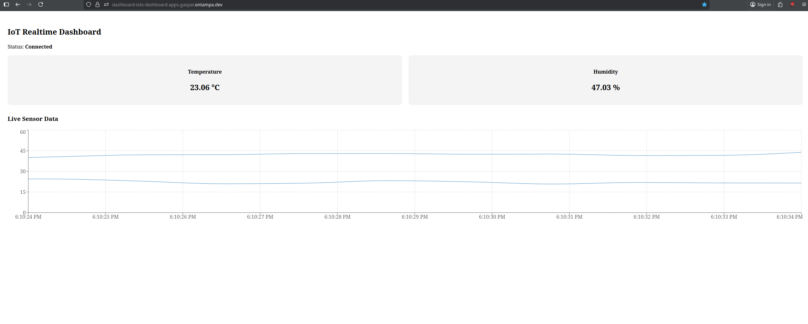

Learning
I am continuously expanding my knowledge as learning is a core part of my growth as a developer and engineer.

IoT Dashboard
Designed to stream real-time sensor data from a custom-built embedded device to a web dashboard.
C, JavaScript, ESP-IDF, React, Express, Docker, OKD
- Streaming sensor data from ESP32 devices using ESP-IDF and MQTT for real-time telemetry.
- Building a web dashboard with React and WebSockets for live data visualization.
- Exploring containerized deployment and orchestration on OKD for scalable service delivery.
- Developing embedded firmware in C to interface with sensors and publish telemetry.
- Future enhancements will include analytics and anomaly detection for sensor data streams.
OpenCV
Exploring real-time computer vision techniques using OpenCV in C++, focusing on image processing and object detection fundamentals.
C++
- Implementing image processing pipelines for feature detection and object analysis.
- Experimenting with real-time video capture and frame manipulation.
- Learning foundational computer vision techniques for object recognition and spatial analysis.
- Building small prototypes to understand CV workflows and performance considerations.
- Future work includes object tracking and dataset-driven vision models.